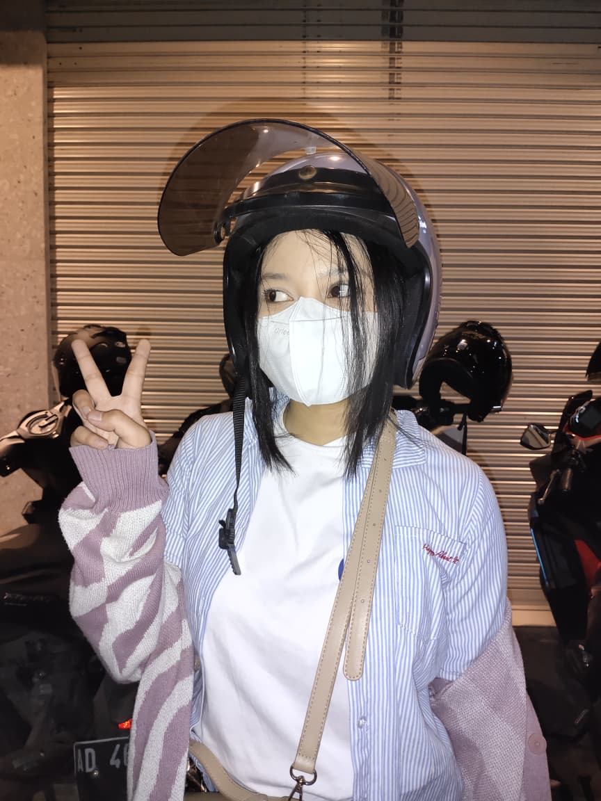
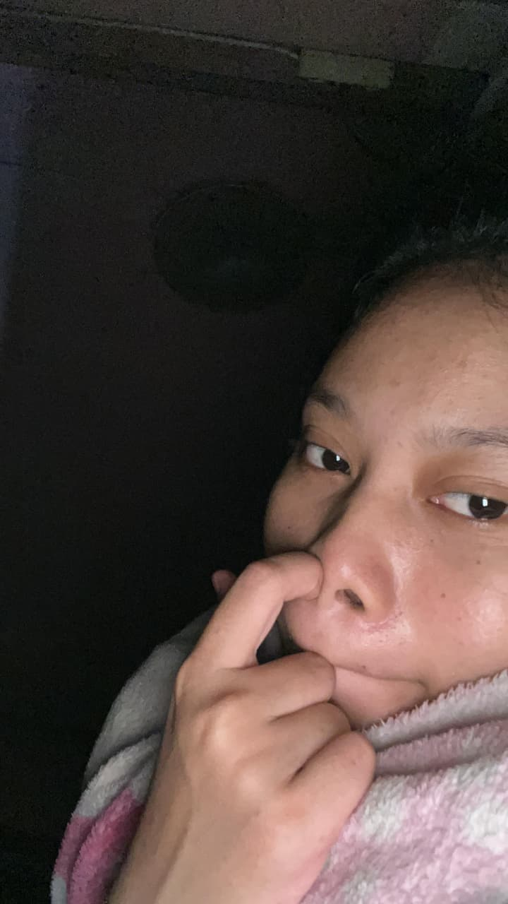
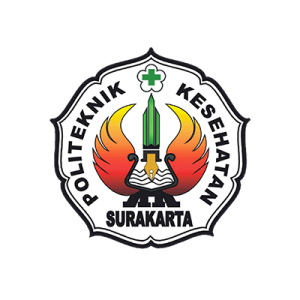
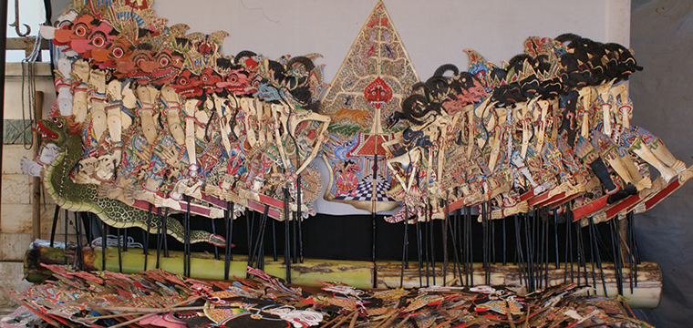
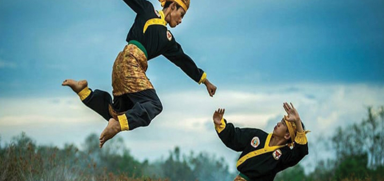
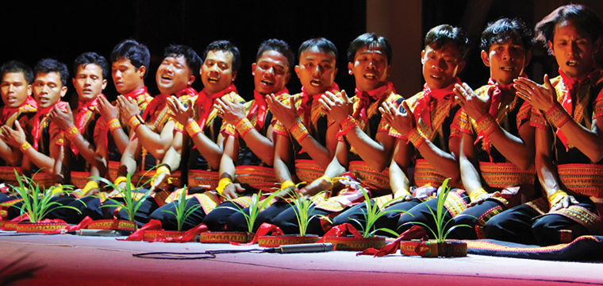

Newa Kheisya
Pramesthilaras
Content Writer & UX Writer
Newa's Here menulis ulang cara brand bicara ke pembacanya — dari konten website sampai microcopy produk — supaya pesannya nyampe dalam satu tarikan napas.
Tulisan yang bagus itu tulisan yang "hilang".

Saya merupakan alumni D3 Jamu tahun 2024. Saat ini saya bekerja sebagai penulis, periset, dan pengolah data secara penuh waktu untuk website Jamupedia yang berada di bawah naungan Yayasan Literasi Husada Nusantara Surakarta.
Pengalaman ini membentuk kemampuan saya dalam mengolah informasi kesehatan tradisional secara ilmiah dan komunikatif. Selain itu, saya memiliki ketertarikan yang kuat terhadap budaya populer (pop culture) serta minat yang besar untuk menulis konten kreatif, khususnya untuk kebutuhan majalah wanita.
Pendidikan & pencapaian

Politeknik Kesehatan Kementerian Kesehatan Surakarta
Program Studi DIII Jamu
Dua hal yang saya kerjakan
Fokus, bukan serba bisa supaya hasilnya konsisten dan terasa dipikirkan.
Website content
Menulis dan menyusun konten halaman website — beranda, tentang, kategori, sampai artikel — supaya brand punya satu suara yang konsisten di semua halaman.
UX writing
Microcopy untuk tombol, form, notifikasi, dan pesan error atau kosong — yang bikin produk terasa lebih manusiawi dan gampang dipakai.
Studi kasus
Sebagian proyek yang pernah saya tulis dan kelola kontennya.

The Story of Wayang
Artikel dalam seri warisan budaya takbenda UNESCO yang menelusuri asal-usul wayang sebagai seni bayangan tertua di Nusantara — mulai dari akar filosofis namanya, jejaknya dalam prasasti dan karya sastra kuno, ragam jenis wayang di berbagai daerah, hingga pengakuan resmi UNESCO pada 2003.
The Story of Reog Ponorogo
Mengangkat kesenian Reog Ponorogo sebagai warisan budaya takbenda yang diakui UNESCO pada 2004 — dari legenda cinta di balik lahirnya kesenian ini, peran tiap karakter di panggung, proses pembuatan kostum dan topeng, hingga upaya pelestariannya lintas generasi.

The Story of Pencak Silat
Pencak silat, kesenian tradisional asli dari Indonesia yang masih dipelajari khususnya oleh para remaja. Pencak silat berkembang dari Sabang sampai Merauke dengan ciri khasnya masing-masing. Dewasa ini, pencak silat semakin unjuk diri dengan adanya organisasi pencak silat, kompetisi pencak silat, hingga ke ranah layar kaca.

The Story of Tari Saman
Tari saman merupakan warisan budaya yang berasal dari masyarakat suku Gayo, khususnya Gayo Lues yang menghuni wilayah Aceh Tenggara dan Aceh Timur.
Seperti sawi putih, sukses tidak terjadi instan. Ia adalah kumpulan dari lembaran-lembaran proses yang dibangun dengan konsistensi dan kerapatan tekad, Sawi putih adalah jalan ninja ku.